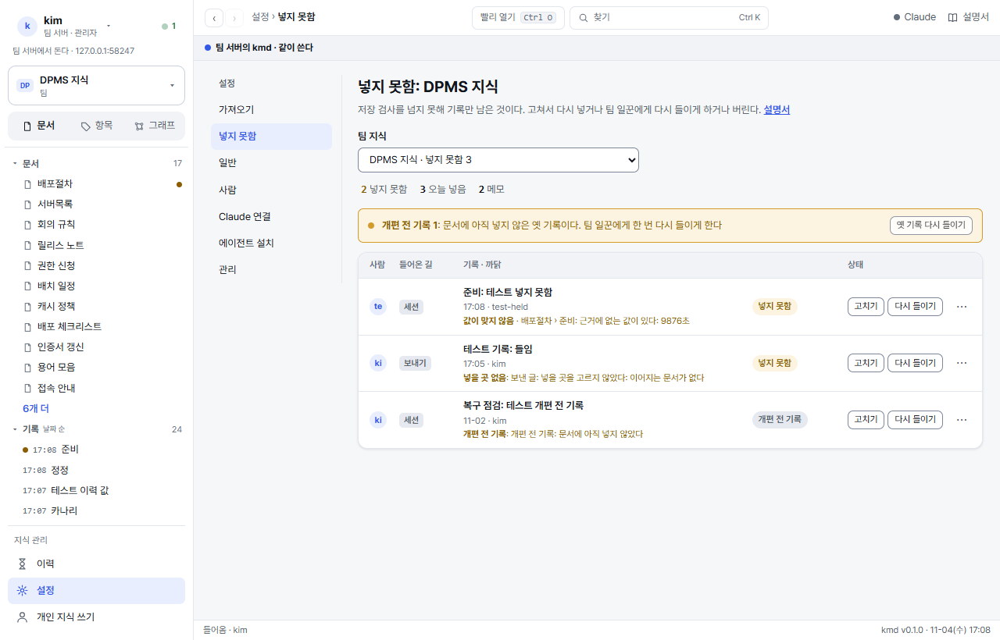

지식관리자
팀 지식 하나를 맡은 사람(주인 포함)이 읽는다. 저장은 그 순간 문서에 들어가거나 기록만 남는다. 기록만 남은 넣지 못함, 문서 하나의 문체 · 짜임을 정돈하는 다듬기, 이 지식을 누가 보고 쓰나 하는 권한, 자료를 지켜보며 맞추는 가져올 곳, 기록과 어긋난 문서를 세션에서 맞추는 다시 그리기 · 빠진 항목 채우기를 다룬다. 지식관리자 자리는 지식마다 받는다(총괄 관리자는 모든 지식의 지식관리자다).
1기록이 문서가 되는 길
정리(모아서 나중에 넣기)는 없다. 어느 길로 들어오든 저장하는 순간 검사를 거쳐 문서에 들어가거나, 넘지 못한 것은 기록만 남아 「넣지 못함」 이 된다(2절).
- 세션 · 화면 · HTTP: 항목 조각(지문 포함)을 실은 저장은 그 순간 넣는다. 조각 없이 온 기록은 메모로 남는다(문서를 바꾸지 않는다 · 넣지 못함 화면 요약 줄의 「메모 n」).
- 파일 넣기 · 가져올 곳 · 다시 들이기 · 다듬기: 팀 일꾼(팀 구독의 Claude)이 들어온 그때 하나씩 기록과 항목 글을 같이 짓고 저장 한 번으로 넣는다(들이기). 일 줄에서 「짓기 › 넣기」 로 보인다.
- 정정(기록 고치기): 옛 값이 그 항목에 한 곳뿐이면 kmd 가 규칙으로 바로 바꿔 넣고(Claude 없음), 아니면 팀 일꾼 들이기로 넘긴다.
- 보내기(개인 프로그램 → 팀): 보낸 사람 PC 의 Claude 가 이 지식의 문서를 읽고 기록과 항목 글을 지어 글마다 저장 하나로 보낸다. 넣을 곳을 고르지 못한 글 · 쓰기 자리의 새 문서는 넣지 못함이다.
- 대량 넣기(Claude Code 스킬
kmd-team-import): 파일마다 저장 하나. 조각 없이 온 기록은 넣지 못함(넣을 곳 없음). - 값이 바뀐 곳은 이력에 「옛 값 → 새 값」 으로 남고 항목마다 되돌릴 수 있다.
예전에는 받은 기록을 모아 두었다가 정리 때 문서에 넣었다. 「저장이 곧 반영」 개편(2026-11)으로 정리 화면 · 정리 설정은 걷었다. 옛 정리 화면 주소는 넣지 못함 화면으로 간다. 개편 전에 남아 아직 문서에 들어가지 않은 기록은 넣지 못함 화면에 「개편 전 기록」 으로 보인다(2절 끝).
2넣지 못함: 기록만 남은 것

세션 · 화면 · 파일 넣기 · 가져올 곳 · 정정 · 보내기 · 대량 넣기는 저장하는 순간 검사(꼴 · 값 대조 · 지문)를 거쳐 문서에 들어간다. 넘지 못한 것은 기록만 남고 「넣지 못함」 이 된다. 장부를 따로 두지 않는다: 그 기록 자체가 목록이다. 설정 › 넣지 못함에서 본다(지식 카드의 「넣지 못함 n」 · 항목 머리 칩 · 기록의 [넣지 못함 화면] 에서도 간다).
- 누가 보나: 지식관리자는 그 지식의 것 모두, 쓰기 자리는 자기 것만. 읽기 자리는 비어 보인다(기록 자체는 읽기 자리도 본다).
- 요약 줄: 넣지 못함 n · 오늘 넣음 n · 메모 n. 표의 열은 사람 · 들어온 길(세션 · 정정 · 파일 · 코드 · 팀 일꾼 · 가져올 곳 · 보내기) · 기록과 까닭 · 상태.
- 까닭: 값이 맞지 않음(기록에 없는 값) · 문서 꼴 · 그사이 바뀜 · 넣을 곳 없음 · 원본이 주인 · 저절로 채우는 표 · 섞인 자리 · 되돌린 값 · 조각이 맞지 않음 · 세울 이름 · 자리 잃음 · Claude 에 보내지 않음 · 팀 일꾼이 받지 않음(24시간) · 팀 일꾼이 짓지 못함 · 개편 전 기록 · 개편 전 보내기.
- [고치기]: 까닭이 넣을 곳이면 넣을 곳 고르기 창(항목을 고르면 팀 일꾼이 그 항목에 다시 들인다), 아니면 기록 고치기 창(정정 기록 · 사용자 설명서 5절).
- [다시 들이기]: 팀 일꾼(팀 구독의 Claude)이 그 기록을 기록 + 문서로 다시 짓는다. 넘으면 새 기록이 원 기록을 바로잡고(원 기록은 「바로잡힘」), 못 넘으면 새 기록이 넣지 못함으로 남아 다음 [다시 들이기] 를 맡는다. 한 기록에 도는 일감은 하나다. 자기 것은 쓰기 자리, 남의 것은 지식관리자.
- [이름 세우기](지식관리자): 쓰기 자리 · 팀 일꾼이 기록에 실어 둔 「세울 이름 · 세울 갈래」 를 장부에 세운다. 원 기록은 「바로잡힘」.
- ⋯ › 버리기(지식관리자): 문서에 넣지 않기로 한다. 기록은 지우지 않고 남는다 · 이력에 「버림」.
- 들이기 · 정정 · 다시 들이기가 넣지 못함으로 끝나면 일감을 만든 사람의 이력에 「넣지 못함」 한 줄이 선다. 세션 · 화면 저장은 그 자리의 응답과 세션 brief 의 「넣지 못함 n」 으로 알린다.
개편 전에 남아 아직 문서에 넣지 않은 기록(정리를 기다리던 기록)은 넣지 못함 목록에 「개편 전 기록」 으로 보인다. 넣지 못함 화면 위 띠의 [옛 기록 다시 들이기](지식관리자)를 누르면 그 기록마다 팀 일꾼 일감이 선다(한 번에 500 · 이미 도는 것은 건너뛴다 · 오늘 들이기 상한에 걸리면 거기서 멈춘다). 넘으면 문서에 들어가고, 못 넘으면 새 넣지 못함으로 남는다.
3문서 다듬기 · Claude 에 보내지 않음
문서 머리의 [다듬기](지식관리자 · 팀 지식): 그 문서 하나의 문체 · 짜임(경위 걷기 · 짧은 문장 · 목록 · 표)을 팀 일꾼이 정돈한다. 늘 도는 단계가 아니라 손으로 거는 일이다.
- 확인 창(「문체 · 짜임만 정돈한다 · 값은 바꾸지 않는다」)에서 [다듬기] 를 누르면 일 줄에 오른다. 같은 문서에 도는 다듬기가 있으면 그것을 쓴다.
- 항목마다 값(수 · 이름 · 코드 · 날짜 · 주소)이 옛 글과 같을 때만 넣는다. 값이 바뀌는 항목은 빼고 그 까닭을 일 줄과 기록(「넣지 않은 항목」)에 남긴다.
- 결과는 이력 갈래 「다듬기」 한 줄(기록 「다듬기: 문서」)이고, 항목마다 [되돌리기] 가 된다.
- 원본이 주인인 문서 · ## 항목이 없는 문서는 다듬지 않는다(## 없는 옛 문서는 운영 설명서 7절의
kmd docfmt <지식> --lift로 먼저 올린다).
Claude 에 보내지 않음(설정 › 일반 › 팀 지식 표의 스위치 · 지식관리자): 켜면 이 지식의 글을 팀 일꾼에게 보내지 않는다. 파일 넣기 · 가져올 곳 · 다시 들이기는 일감을 세우지 않고 기록만 남겨 「넣지 못함」(Claude 에 보내지 않음)으로 두고, [다듬기] 는 거절한다. 팀원의 Claude Code 대화는 kmd 도구로 여전히 이 지식을 읽는다. 이 설정은 지식 안의 _members.md 에 적혀 백업과 같이 간다.
4권한: 이 지식의 자리

- 실제 자리는 사람 줄과 그 사람이 든 묶음 가운데 높은 것이다.
- 새 사람을 만드는 것은 총괄 관리자다. 지식관리자는 있는 사람 · 묶음에 이 지식의 자리를 준다.
- 주인 넘기기 · 지식 지우기는 총괄 관리자가 한다(지식관리자 혼자 넘기거나 지우지 않게).
- 화면에서 숨기는 것으로 끝나지 않는다. 서버가 모든 길(목록 · 찾기 · 이력 · 알림 · Claude Code)에서 자리로 거른다.
5가져올 곳

| 유형 | 들어오는 것 | 누가 더하나 |
|---|---|---|
| 문서 폴더 | 바뀐 파일만. 파일마다 팀 일꾼이 기록과 항목 글을 한 번에 지어 갈래 · 주제 문서의 항목에 넣는다(못 넘으면 기록만 + 넣지 못함). 원본에서 지운 파일은 지식을 바꾸지 않는다 | 서버 폴더는 총괄 관리자 |
| 소스 코드(git) | 더한 때의 묶음이 기준. 새 묶음마다 팀 일꾼이 바뀐 값 · 차이를 읽고 기록과 걸린 항목의 글을 한 번에 고친다(넣을 항목이 없으면 기록만 + 넣지 못함) | 허락된 호스트(sourceHosts)의 https 는 지식관리자 · ssh 는 총괄 관리자 |
| DB | 테이블마다 정의 표 · 바뀐 테이블만. 이름(table:테이블)을 이름 장부에 세운다. 늘 읽기 전용 · 행은 읽지 않는다 | 허락된 호스트면 지식관리자 |
- 줄을 누르면 자세히: 상태 · 마지막 바뀜 · 주소 · 넣을 지식 › 문서 · 언제 · 자격을 고치고 [고친 것 저장] · [전체 다시 맞추기] · [지우기](들어온 문서는 그대로).
- 쓰기 자리 사람의 [관리자에게 부탁] 은 총괄 관리자의 관리 화면 문제 줄에 선다(같은 부탁은 한 줄로).
저절로 채우는 표
가져올 곳이 채우는 표는 회색 상자로 보이고 사람은 고치지 못한다. 원본(코드 · 파일 · DB)을 고치면 다음 확인 때 바뀐다. 한꺼번에 크게 바뀌면(새 10개 넘게 · 사라짐 10% 넘게 · 문서 폴더는 사라짐만) 쓰지 않고 멈춘다. 설정 › 가져오기 › 일 줄의 「멈춤 · 확인」 거름에서 그 일을 골라, 맞으면 [그대로 맞추기], 아니면 [이번은 건너뛰기].
6다시 그리기 · 빠진 항목 채우기(세션 스킬)
저장이 조각조각 쌓여 경위와 결론이 섞인 항목, 회의 기록은 있는데 회의록 문서에는 그 회의가 없는 것 같은 기록과 문서의 어긋남을 맞춘다. 화면 단추가 아니라 Claude Code 세션에서 스킬 kmd-migrate 로 한다. 지식관리자가 세션에서 결과를 보고 항목마다 승인한 것만 넣는다.
| 하는 일 | 무엇을 | 재료 |
|---|---|---|
| 다시 그리기 | 있는 항목 하나를 지금 상태로 다시 쓴다. 날짜별 덧붙임 · 경위 · 질문 목록을 걷고 결론 · 값 · 규칙만 남긴다 | 그 항목을 건드린 기록 전부(오래된 순 · 늦은 것이 이긴다) |
| 빠진 항목 채우기 | 회의록 · 주간보고 같은 사건 문서에 없는 회의 · 통화를 새 항목(「YYYY-MM-DD 무엇」)으로 세운다. 날짜 차례 자리에 들어간다 | 그 회의 · 통화의 기록 |
이렇게 부탁한다
kmd 저장소(kmd 폴더)에서 Claude Code 세션을 열고 말로 부탁한다. 스킬이 진단부터 시작해 할 것을 묻는다.
| 하고 싶은 것 | 세션에 하는 말(예) |
|---|---|
| 지식 전체에서 어디가 어긋났나 보기 | 「DPMS 지식 진단해 줘. 다시 그릴 만한 항목이랑 회의록에 빠진 회의 보여 줘」 |
| 회의록에 빠진 회의 채우기 | 「DPMS 회의록에 빠진 회의 · 통화 채워 줘」 |
| 항목 하나 다시 그리기 | 「위험및이슈관리대장 DPMS-ISS-01 을 기록으로 다시 그려 줘」 |
| 문서 하나를 잡고 다시 만들기 | 「위험및이슈관리대장 다시 만들어 줘」(그 문서에서 기록이 쌓인 항목을 하나씩 다시 그린다) |
| 화면설계서처럼 큰 문서를 나눠서 | 「화면설계서에서 기록 5건 넘는 항목만 다시 그려 줘. 다섯 개씩 보여 주고 승인받아」 |
| 주간보고처럼 문서가 아직 없는 갈래 | 「주간보고 기록이 어디 들어가 있는지 보여 줘」(문서를 새로 세우지는 않는다. 세울지는 사람이 정한다) |
세션은 항목마다 아래처럼 보이고 승인을 기다린다. 「넣어」 · 「이 문장은 살려」 · 「이건 빼」 처럼 답한다.
【다시 그리기】 이슈 대장 › DPMS-ISS-01
이어진 기록 11 · 줄 30 → 18
바뀐 값: 진행상태 확인 중 → 해결
사라지는 문장 2
- 「해결방안: SCADA 매뉴얼에서 …」
- 「남은 확인 1 ~ 18 …」
승인하시면 넣습니다(기록 1 · 커밋 1).지키는 것
- 저장 검사는 화면 저장과 같다. 기록에 없는 값을 지어내면 「근거에 없는 값」, 있던 값이 빠지면 「옛 글의 값이 빠졌다」 로 걸려 아무것도 쓰지 않는다. 지운 값은 기록에 「옛 값 → (뺌)」 으로 남겨야 넘는다(넣지 못함을 만들지 않는다).
- 사라지는 표 행 · 문장은 사람이 보고 「빼도 된다」 고 해야 넣는다.
- 기록이 없는 항목은 다시 그리지 않는다. 재료가 지금 글뿐이라 얻을 것이 없다. 문체만 고를 것이면 3절 [다듬기].
- 넣지 못함 · 메모 기록은 재료가 아니다. 앞서 Claude 가 지은 기록(다듬기 · 들이기)은 값의 근거로만 쓴다.
- 머리 이름은 바꾸지 않는다. 항목 나누기 · 합치기 · 지우기는 화면 문서 고치기로 한다.
- 항목 하나가 기록 하나(태그
rebuild)로 들어간다. 이력에 남고 항목마다 [되돌리기] 가 된다.
서버에 반영하기
세션은 지식의 사본(백업 자리에서 받은 git 폴더)에 쓴다. 팀 서버가 도는 폴더에는 바로 쓰지 않는다.
- 세션이 묶음(문서 하나)마다 사본을 백업 자리로 올린다(push).
- 곧바로 총괄 관리자가 관리 화면 알림의 「백업이 앞섰다」 줄에서 [백업에서 받기] 를 누른다(서버에서는
kmd backup pull <지식>). 앞으로만 받고, 받은 글에 새 오류가 있으면 되돌린다. - 올린 뒤 받기 전에 서버에서 저장이 있으면 「갈라졌다」 가 된다. 받지 말고 어느 쪽이 맞는지 정한다(운영 설명서 되살리기).
그 지식의 지식관리자 · 총괄 관리자가 쓴다. kmd 저장소와 지식 사본(백업 자리 git)에 손이 닿아야 한다. 스킬은 저장소의 .claude/skills/kmd-migrate, 도구는 scripts/kmd-migrate.mjs(진단 scan · 항목 읽기 trail · 기록 읽기 rec · 마른 검사 check · 넣기 put)다. 세션이 알아서 부르므로 직접 칠 일은 드물다.
7좋은 지식으로 두기
- 본문에는 확정된 지식만. 아직 반영 안 된 기록 · 초안 · 경위는 넣지 않는다.
- 문서 첫머리 1~3문장 요약 · 항목 하나 300줄 안. 넘으면 대상마다 항목으로 나눈다.
- 항목 이름에 날짜 · 「수정」 · 「추가」 를 넣지 않는다(회의록 같은 사건 문서만 날짜).
- 출처 · 상태 · 내부 표식은 kmd 가 문서 끝 「참고」 에 둔다. 본문에 주석 · 기록 링크를 두지 않는다.
점검이 필요하면 총괄 관리자에게 kmd guard <지식>(이름 없는 기록 · 장부 밖 이름 · 깨진 머리 수)와 kmd search-check <지식>(찾기 점검)를 부탁한다.